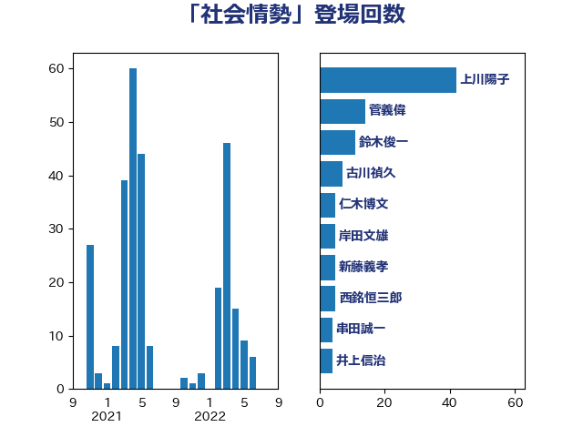

単語「社会情勢」

| 上川陽子 | 自由民主党 | 42 回 |
| 菅義偉 | 自由民主党 | 14 回 |
| 鈴木俊一 | 自由民主党 | 11 回 |
| 古川禎久 | 自由民主党 | 7 回 |
| 仁木博文 | 無所属 | 5 回 |
| 岸田文雄 | 自由民主党 | 5 回 |
| 新藤義孝 | 自由民主党 | 5 回 |
| 西銘恒三郎 | 自由民主党 | 5 回 |
| 串田誠一 | 日本維新の会 | 4 回 |
| 井上信治 | 自由民主党 | 4 回 |
| 宮崎政久 | 自由民主党 | 4 回 |
| 清水貴之 | 日本維新の会 | 4 回 |
| 稲富修二 | 立憲民主党 | 4 回 |
| 赤木正幸 | 日本維新の会 | 4 回 |
| 小西洋之 | 立憲民主党 | 3 回 |
| 船橋利実 | 自由民主党 | 3 回 |
| 青木愛 | 立憲民主党 | 3 回 |
| 麻生太郎 | 自由民主党 | 3 回 |
| 中谷元 | 自由民主党 | 2 回 |
| 井出庸生 | 自由民主党 | 2 回 |
| 伊藤岳 | 日本共産党 | 2 回 |
| 大野敬太郎 | 自由民主党 | 2 回 |
| 安江伸夫 | 公明党 | 2 回 |
| 山添拓 | 日本共産党 | 2 回 |
| 山際大志郎 | 自由民主党 | 2 回 |
| 岡本三成 | 公明党 | 2 回 |
| 川合孝典 | 国民民主党 | 2 回 |
| 平井卓也 | 自由民主党 | 2 回 |
| 平山佐知子 | 無所属 | 2 回 |
| 梶山弘志 | 自由民主党 | 2 回 |
| 浅野哲 | 国民民主党 | 2 回 |
| 牧山ひろえ | 立憲民主党 | 2 回 |
| 薗浦健太郎 | 自由民主党 | 2 回 |
| 赤羽一嘉 | 公明党 | 2 回 |
| 金子恭之 | 自由民主党 | 2 回 |
| 中曽根康隆 | 自由民主党 | 1 回 |
| 中根一幸 | 自由民主党 | 1 回 |
| 中西健治 | 自由民主党 | 1 回 |
| 中谷一馬 | 立憲民主党 | 1 回 |
| 伊藤孝恵 | 国民民主党 | 1 回 |
| 佐藤啓 | 自由民主党 | 1 回 |
| 勝部賢志 | 立憲民主党 | 1 回 |
| 古賀友一郎 | 自由民主党 | 1 回 |
| 吉田統彦 | 立憲民主党 | 1 回 |
| 和田義明 | 自由民主党 | 1 回 |
| 坂本哲志 | 自由民主党 | 1 回 |
| 城井崇 | 立憲民主党 | 1 回 |
| 塩村あやか | 立憲民主党 | 1 回 |
| 大野泰正 | 自由民主党 | 1 回 |
| 奥野総一郎 | 立憲民主党 | 1 回 |
| 宮路拓馬 | 自由民主党 | 1 回 |
| 小林茂樹 | 自由民主党 | 1 回 |
| 小林鷹之 | 自由民主党 | 1 回 |
| 山下雄平 | 自由民主党 | 1 回 |
| 山本香苗 | 公明党 | 1 回 |
| 山田勝彦 | 立憲民主党 | 1 回 |
| 山田賢司 | 自由民主党 | 1 回 |
| 岸信夫 | 自由民主党 | 1 回 |
| 川田龍平 | 立憲民主党 | 1 回 |
| 木村次郎 | 自由民主党 | 1 回 |
| 杉久武 | 公明党 | 1 回 |
| 柳ヶ瀬裕文 | 日本維新の会 | 1 回 |
| 森屋隆 | 立憲民主党 | 1 回 |
| 武田良太 | 自由民主党 | 1 回 |
| 熊谷裕人 | 立憲民主党 | 1 回 |
| 石橋林太郎 | 自由民主党 | 1 回 |
| 礒崎哲史 | 国民民主党 | 1 回 |
| 義家弘介 | 自由民主党 | 1 回 |
| 萩生田光一 | 自由民主党 | 1 回 |
| 豊田俊郎 | 自由民主党 | 1 回 |
| 足立康史 | 日本維新の会 | 1 回 |
| 逢沢一郎 | 自由民主党 | 1 回 |
| 道下大樹 | 立憲民主党 | 1 回 |
| 金子俊平 | 自由民主党 | 1 回 |
| 鈴木敦 | 国民民主党 | 1 回 |
| 音喜多駿 | 日本維新の会 | 1 回 |
| 高良鉄美 | 無所属 | 1 回 |
| 鬼木誠 | 立憲民主党 | 1 回 |